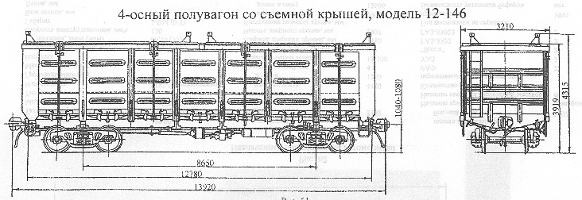

Назначение: для перевозки сыпучих, крупнокусковых, штучных и других грузов, требующих защиты от атмосферных осадков
Параметры
| Номер проекта | 146.00.00.000 |
| Технические условия | ТУ3183-004-07518941-93 |
| Модель вагона | 12-146 |
| Тип вагона | |
| Изготовитель | ГПО "Уралвагонзавод" |
| Грузоподъемность, т | 64 |
| Масса тары вагона, т | 30 |
| Нагрузка: статическая осевая, кН(тс) |
245(25) |
| погонная, кН/м(тс/м) | 66,3(6,76) |
| Объем кузова, м³ | 88 |
| Скорость конструкционная, км/ч | 120 |
| Габарит | 1-Т |
| База вагона, мм | 8650 |
| Длина, мм: по осям сцепления автосцепок |
13920 |
| по концевым балкам рамы | 12780 |
| Ширина максимальная, мм | 3210 |
| Высота от уровня верха головок рельсов, мм: максимальная |
4315 |
| до нижней обвязки | 1415 |
| Количество осей, шт. | 4 |
| Модель 2-осной тележки | 18-100 |
| Наличие переходной площадки | нет |
| Наличие стояночного тормоза | есть |
| Внутренние размеры кузова, мм: ширина |
2911 |
| длина | 12750 |
| высота | 2365 |
| Удельный объем, м³/т | 1,08 |
| Наличие торцовых дверей | нет |
| Количество разгрузочных люков, шт. | 14 |
| Угол открывания крышек люков, град.: средних |
31 |
| надтележечных | 22 |
| над тормозным цилиндром | 27 |
| Количество прихватов для крепления крыши, шт. | 8 |
| Длина крыши, мм | 13220 |
| Ширина крыши, мм | 3185 |
| Высота крыши с фитингами, мм | 683 |
| Количество секций крыши, шт. | 2 |
| Количество фитингов на одной секции крыши, шт. | 4 |
| Год постановки на серийное производство | 1996 |
| Возможность установки буферов | нет |
Возможно оборудование, крыш верхними загрузочными люками